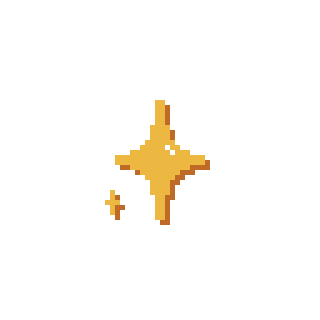
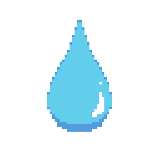
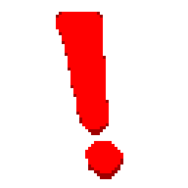
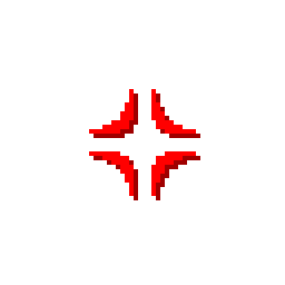
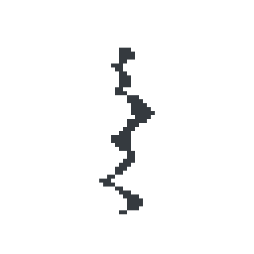

Idle
Default / listening

Talking
During TTS playback
Confident
Winning an argument

Sweating
Losing an argument

Shocked
Hit by counter-point

Angry
Interrupted / challenged

Breakdown
Argument demolished
